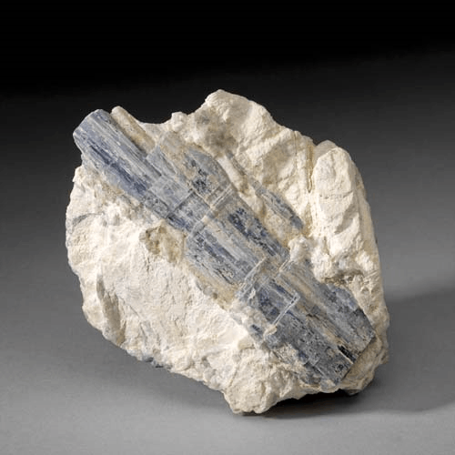

Kyanite - Al2O(SiO4)
Nesosilicates


Habit: Blue, green, colorless, gray or, most recently discovered, orange. Commonly bladed, elongated in one direction and flattened in another. Vitreous luster; translucent to transparent. White streak.
Environment: Typically occurs in regional metamorphic or pelitic rocks; can be found as a detrital mineral.
Etymology: From the Greek kuanos, meaning "dark blue," for its most common color.